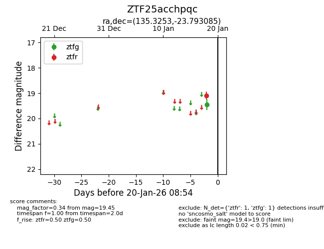
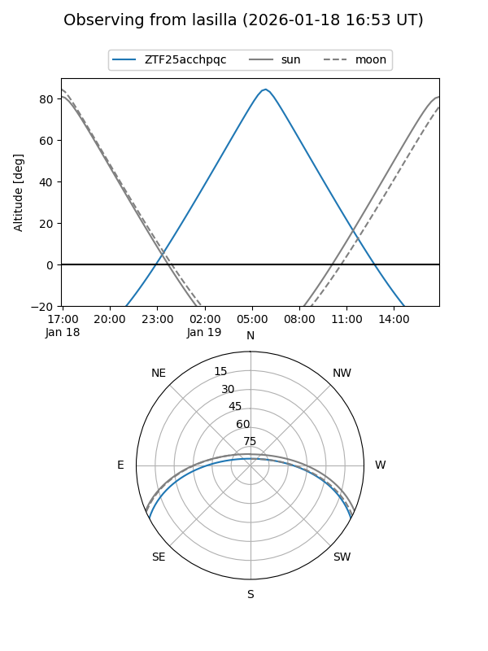
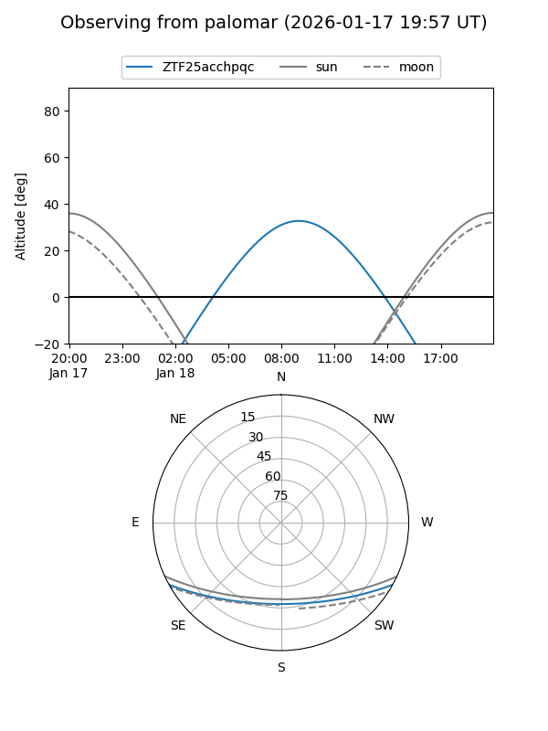

ZTF25acchpqc
Target ZTF25acchpqc at 2026-01-18 09:25
Aliases and brokers:
FINK: link
Lasair: link
ALeRCE: link
alt names
ZTF25acchpqc (ztf,fink_ztf)
Coordinates:
equatorial (ra, dec) = 135.3253,-23.79309
equatorial (HMS+DMS) = 09:01:18.06,-23:47:35.11
galactic (l, b) = (249.9921,+14.66566)
Flags:
Photometry:
last ztfg=19.45, ztfr=19.09
1 ztfg, 1 ztfr detections
Lightcurve

Visibility


Additional plots